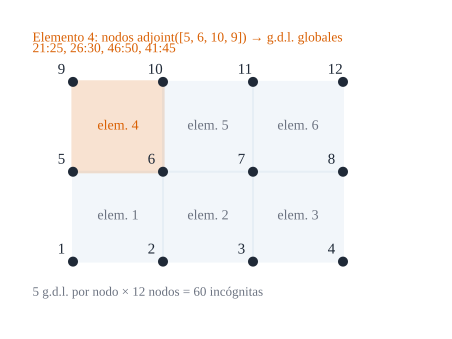

30Ensamblaje, condiciones de contorno y autovalores
De la matriz de un elemento al sistema global: conectividad, apoyos, carga estática y frecuencias propias

Figura 30.1: Malla de \(3\times2\) elementos con su numeración. El elemento 4 (naranja) usa los nodos 5, 6, 10 y 9, y por tanto los g.d.l. globales \(21\!:\!25\), \(26\!:\!30\), \(46\!:\!50\) y \(41\!:\!45\). Cinco g.d.l. por nodo \(\times\) 12 nodos \(=60\) incógnitas. Esquema ilustrativo.
Cómo se juntan los elementos para formar la estructura completa y cómo se le pide al ordenador, con la misma matriz, la flecha bajo una carga o las frecuencias a las que vibra
Objetivos y prerrequisitos
Objetivos. Al terminar el tema sabrás:
calcular la lista de g.d.l. globales de un elemento a partir de su conectividad;
ensamblar\(\mathbf K\), \(\mathbf M\) y \(\mathbf F\) y aplicar condiciones de contorno eliminando g.d.l.;
traducir apoyos habituales (simple, empotrado, simetría, diafragma) a g.d.l. fijos;
resolver el problema estático\(\mathbf K\mathbf d=\mathbf F\) y el de autovalores\((\mathbf K-\omega^2\mathbf M)\mathbf d=\mathbf 0\);
g.d.l. global del componente \(c\) (\(1\ldots5\)) del nodo \(n\)
\(\mathbf K,\mathbf M,\mathbf F\)
rigidez, masa y cargas globales
\(\mathbf d\), \(\omega\)
desplazamientos nodales y frecuencia angular (rad/s)
NotaExplicación para ingenieros: poner un apoyo es borrar filas; calcular frecuencias es tocar la campana
Un apoyo no «añade» nada: elimina incógnitas. Si un nodo no puede moverse en \(u_3\), esa incógnita vale cero y desaparece del sistema (se borran su fila y su columna). Lo que queda es la estructura ya sujeta: sin apoyos la matriz es singular (la estructura podría flotar). Las frecuencias propias son los «tonos» a los que la estructura vibra si se la golpea y se la deja libre: la campana de la torre es la misma estructura sin carga. El problema de autovalores las encuentra todas de golpe.
30.1 Conectividad y ensamblaje
Cada elemento \(e\) conoce sus cuatro nodos globales. Sus 20 g.d.l. locales ocupan en el vector global las posiciones
y el ensamblaje es el de E1 (ecuación 22.5): para cada elemento, \(K[\mathbf g_e,\mathbf g_e]\mathrel{+}=\mathbf K_e\) y \(F[\mathbf g_e]\mathrel{+}=\mathbf F_e\). Los nodos compartidos reciben la suma de las contribuciones de todos los elementos que los tocan.
Ejemplo 30.1 (Ejemplo resuelto: g.d.l. del elemento 4) En la Figura 30.1 el elemento 4 tiene los nodos \((5,6,10,9)\). Con ecuación 30.1: \[
\mathbf g_4=[\,21\!:\!25,\ 26\!:\!30,\ 46\!:\!50,\ 41\!:\!45\,].
\] El g.d.l. \(u_3\) del nodo 10 (tercer componente) es el \(5\cdot9+3=\mathbf{48}\) del vector global, y aparece en la posición \(13\) del vector local del elemento 4 (tercer nodo: \(5\cdot2+3\)). Resultado analítico.
En una malla de nodos numerados como en la Figura 30.1, ¿qué posición ocupa en el vector global el g.d.l. \(u_3\) (tercer componente) del nodo 10?
\(5(n-1)+c\) con \(n=10\), \(c=3\).
\(5\cdot9+3=48\).
AdvertenciaDos puntos que suelen confundir
El orden de los g.d.l. en el elemento y en el global debe ser el mismo. Si cada nodo se ordena \([u_1,u_2,u_3,\varphi_1,\varphi_2]\), el elemento también.
La matriz global es dispersa (la fila de un g.d.l. sólo tiene entradas de los nodos vecinos). Para mallas grandes se guarda en formato disperso: es lo que hace ensamblar.
30.2 Condiciones de contorno
Una condición de contorno esencial fija un g.d.l.; se «aplica» eliminándolo. Las más habituales, para una lámina con la convención de este libro (g.d.l. \(u_1,u_2,u_3,\varphi_1,\varphi_2\) covariantes; borde \(\theta^1=\text{cte}\)):
Apoyo
Se fijan en los nodos del borde
Empotrado
los cinco: \(u_1,u_2,u_3,\varphi_1,\varphi_2\)
Simplemente apoyado «duro»
\(u_3\) y el giro tangente al borde (\(\varphi_2\) en un borde \(\theta^1=\text{cte}\))
Articulado de membrana
\(u_1,u_2,u_3\) (los giros, libres)
Diafragma rígido en su plano
desplazamientos en el plano de la sección (\(u_2\) y \(u_3\) en un extremo de cilindro de eje \(\theta^1\))
Plano de simetría (borde \(\theta^1=\text{cte}\))
\(u_1\) y \(\varphi_1\)
AdvertenciaConvenio por confirmar
La tabla usa g.d.l. covariantes y los giros \(\varphi_\alpha\) del tema D5. Si el autor decide trabajar con g.d.l. físicos o fija otro convenio de giros (pendiente), cambia qué g.d.l. se fija en cada apoyo (por ejemplo, \(\varphi_2\) puede ser el giro respecto del eje tangente o su normal), no la estructura del método.
30.3 Problema estático
Con los g.d.l. fijos eliminados, \(\mathbf K_{ff}\,\mathbf d_f=\mathbf F_f\). Se resuelve por factorización (matrices dispersas simétricas definidas positivas: Cholesky). Las reacciones se recuperan después: \(\mathbf R=\mathbf K_{cf}\mathbf d_f-\mathbf F_c\) en los g.d.l. fijos.
ImportanteIdea clave: la comprobación mínima
Tras resolver, comprobar siempre la suma de reacciones frente a la carga aplicada (equilibrio global). Si no coincide, hay un error de ensamblaje o de apoyos antes de cualquier consideración sobre «precisión del elemento».
30.4 Problema de autovalores
Para vibraciones libres, \(\mathbf d(t)=\boldsymbol\phi\,e^{i\omega t}\) y
Es un problema de autovalores generalizado con \(\mathbf K\), \(\mathbf M\) simétricas y \(\mathbf M\) definida positiva: los autovalores \(\lambda=\omega^2\) son reales y positivos y los modos \(\boldsymbol\phi_i\) son \(\mathbf M\)-ortogonales: \(\boldsymbol\phi_i^{\mathsf T}\mathbf M\boldsymbol\phi_j=\delta_{ij}\). Si se deja libre algún movimiento rígido, aparecen \(\omega=0\) (tantos como movimientos rígidos permitidos).
Ejemplo 30.2 (Ejemplo resuelto: la respiración de un cilindro) En un cilindro largo (sin movimiento axial, \(u_1=0\)) cuyo radio se hincha y contrae uniformemente, no hay flexión: sólo la deformación de aro \(\varepsilon=u_3/R\) con \(N_\varphi=Et\,\varepsilon/(1-\nu^2)\) (con \(\varepsilon_{x}=0\)). La ecuación del movimiento de un trozo de arco, por unidad de longitud, es \(\rho t\,\ddot u_3=-N_\varphi/R\), de modo que \[
\omega=\frac1R\sqrt{\frac{E}{\rho\,(1-\nu^2)}} .
\] Para acero (\(E=210\) GPa, \(\nu=0{,}3\), \(\rho=7850\) kg/m³) y \(R=0{,}5\) m: \(\omega=\dfrac1{0{,}5}\sqrt{\dfrac{210\cdot10^9}{7850\cdot0{,}91}}=\mathbf{10\,844}\) rad/s (\(f=1726\) Hz). Resultado analítico; el programa lo localiza en la lista de autovalores de la malla.
En el Ejemplo 30.2, ¿cuánto vale la frecuencia de respiración \(\omega\) para acero (\(E=210\) GPa, \(\nu=0{,}3\), \(\rho=7850\) kg/m³) y \(R=0{,}5\) m?
Los modos de vibración de la estructura son ortogonales respecto de la matriz de masa: \(\boldsymbol\phi_i^{\mathsf T}\mathbf M\boldsymbol\phi_j=0\) si \(i\ne j\).
Verdadero, para autovalores distintos y \(\mathbf K,\mathbf M\) simétricas con \(\mathbf M>0\). También son \(\mathbf K\)-ortogonales.
TipAplicación real: modos propios de cubiertas y de huesos
ilustrativo El análisis modal de una cubierta o torre de lámina da las frecuencias que deben quedar lejos de las excitaciones del viento o del sismo. En biomecánica, el análisis modal de huesos o de la cavidad craneal se usa, por ejemplo, para comparar frecuencias propias entre individuos o antes y después de una intervención. Idea de aplicación sin fuente verificada: es una orientación, no una cita.
30.5 Práctica guiada en Julia
TipEjemplo computacional
calculado (1) Conectividad y g.d.l. del elemento 4 de la Figura 30.1. (2) Una malla de cilindro con \(u_1=0\) y las simetrías: se calculan los autovalores y se busca el de respiración. (3) Una placa libre: seis frecuencias nulas.
Contar incógnitas. ¿Cuántos g.d.l. tiene una malla de \(20\times10\) elementos? ¿Cuántos quedan libres si se empotra un borde largo?
NotaSolución
\(21\cdot11=231\) nodos \(\Rightarrow1155\) g.d.l. El borde largo tiene 21 nodos: \(21\cdot5=105\) g.d.l. fijos, quedan \(1050\).
Apoyo sin carga. ¿Por qué una placa sin ningún apoyo da error al resolver \(\mathbf K\mathbf d=\mathbf F\)?
NotaSolución
\(\mathbf K\) es singular (seis autovalores nulos de sólido rígido): el sistema no tiene solución única, o ninguna si \(\mathbf F\) no está equilibrada.
Frecuencias y mallas. Si una malla da \(\omega_1\) y otra más fina da un valor menor, ¿con cuál se queda?
NotaSolución
Con la más fina: con masa consistente el valor converge desde arriba (cota superior, E8), de modo que la menor es la más cercana a la verdadera.
La doy por superada si…
Calculo los g.d.l. globales de un elemento a partir de su conectividad.
Ensamblo \(\mathbf K\), \(\mathbf M\) y \(\mathbf F\) y aplico los apoyos eliminando g.d.l.
Traduzco empotrado, apoyo simple, simetría y diafragma a g.d.l. fijos.
Escribo el problema de autovalores y sé cuántos modos nulos esperar.
Verifico un resultado contra una solución conocida y compruebo el equilibrio global.
NotaFuentes, correcciones y qué queda pendiente
Fuentes. Texto autónomo; ensamblaje, condiciones de contorno y análisis modal son estándar (Bathe 1996; Hughes 1987; Zienkiewicz y Taylor, s. f.). La frecuencia de respiración es un resultado analítico (deducción propia, comprobada con el programa).
Qué queda pendiente. El convenio de g.d.l. y giros (determina la tabla de apoyos); la reacción \(\mathbf R\) no se calcula en la práctica; no hay nota histórica por falta de fuente verificada; la «Aplicación real» es una orientación sin fuente.
Zienkiewicz, O. C., y R. L. Taylor. s. f. The Finite Element Method. Butterworth-Heinemann.
Hughes, T. J. R. 1987. The Finite Element Method: Linear Static and Dynamic Finite Element Analysis. Prentice-Hall.
Bathe, K. J. 1996. Finite Element Procedures. Prentice Hall.
Referencias
Son las mismas que aparecen en el margen, junto al texto.
Bathe, K. J. 1996. Finite Element Procedures. Prentice Hall.
Hughes, T. J. R. 1987. The Finite Element Method: Linear Static and Dynamic Finite Element Analysis. Prentice-Hall.
Zienkiewicz, O. C., y R. L. Taylor. s. f. The Finite Element Method. Butterworth-Heinemann.